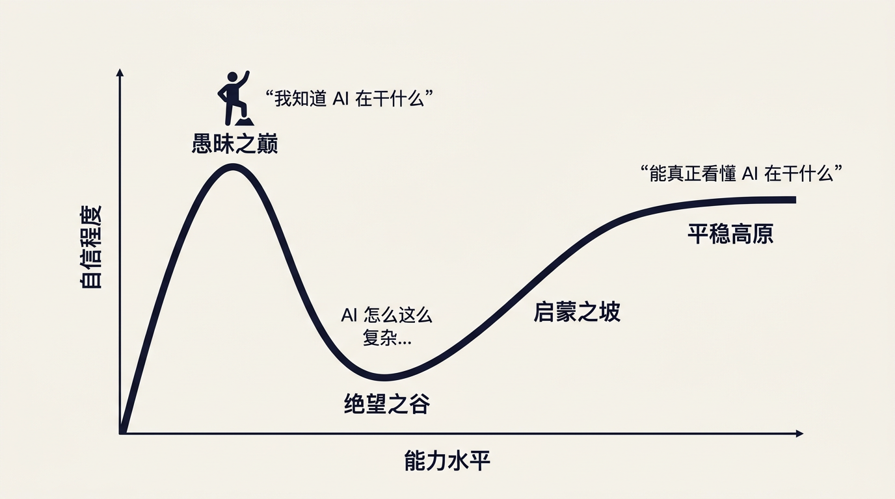

第零篇章 · 入门与定位
我们在哪里？达克效应
达克效应 · Dunning-Kruger Effect：这套课正式开始之前，先花两分钟定位自己。
学习曲线

📍 一些人可能在这里
😰 动手后必经
🎯 课程目标
三个阶段
1
愚昧之巅
📍 一些人可能在这里
刚接触 AI，觉得「我懂了」：ChatGPT 是对话，RAG 就是搜索，Prompt 就是说话。
2
绝望之谷
动手后必经
开始动手，发现模型乱答、Prompt 无效、RAG 效果差，忍不住感叹「AI 怎么这么难用？」
→
平稳高原
🎯 课程目标
真正理解 AI 在做什么，能判断问题出在哪、该用什么方案解决。
弱小和无知从来不是生存的障碍，傲慢才是。
傲慢是成长最大的敌人。到达平稳高原不需要会写代码，但需要放下「我已经懂了」的念头，认真理解底层逻辑。
HR 版的达克曲线：四段各长什么样
| 段 | 你会说的话 | 危险在哪 |
|---|---|---|
| 愚昧之巅 | 「我用过，就那样，还行」 | 用了三个月都在问它写通知——你以为你会了，其实只碰到了它 5% 的能力 |
| 绝望之谷 | 「它老是胡说，还是自己做快」 | 撞到了幻觉和边界，然后放弃。大多数人卡死在这一段 |
| 开悟之坡 | 「哦，它不是搜索引擎，是在续写」 | 开始理解机制，知道什么时候该信、什么时候要验 |
| 持续平稳 | 「这件事该给它做，那件不该」 | 判断力稳定了，能把它放进真实流程 |
这门课整个是为「绝望之谷」设计的。第一篇章讲它为什么会编（解释你踩的坑），第二篇章讲怎么指挥，后面几章讲怎么把它变成真能用的东西。
如果你现在正好在谷底，那你来对地方了——而如果你还在愚昧之巅，读完第一篇章你会先掉进谷里，这是正常且必要的。
如果你现在正好在谷底，那你来对地方了——而如果你还在愚昧之巅，读完第一篇章你会先掉进谷里，这是正常且必要的。
一个诚实的自测
✓ 三个问题，答不上来就还在第一段① 它给你一个数字，你怎么判断这个数是算出来的还是编的？
② 你昨天纠正过它的错，今天新开对话它还会犯吗？为什么？
③ 你们公司的制度它读过吗？没读过它是怎么回答制度问题的？
三个问题这门课都会回答。现在答不上来完全正常——但如果你觉得"这还用问"，那就要小心了。
② 你昨天纠正过它的错，今天新开对话它还会犯吗？为什么？
③ 你们公司的制度它读过吗？没读过它是怎么回答制度问题的？
三个问题这门课都会回答。现在答不上来完全正常——但如果你觉得"这还用问"，那就要小心了。
今天就试诚实地给自己定个位。然后记住你现在的答案——学完第一篇章再回来看这三个问题，你会知道自己动了多少。